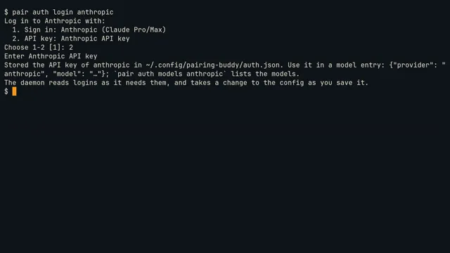

pairing-buddy works inside your session, not beside it. It watches your editor and terminal, speaks when a remark is worth your time, runs what you would skip, and takes the keyboard only when you hand it over. It never writes your files.
v0.9 Navigator, Scout, Driverlocal or cloud modelsMIT
The tour · 6 min · from install to the day's end, with captions; a chapter button jumps thereHow it was made
The concept
Not a chat window. A colleague who sits next to you.
A good pair doesn't take over and doesn't lecture. They notice what you can't see from where you sit, say it in one sentence at the right moment, and keep their hands where you can see them.
quiet
It speaks when it matters
A small, fast Watcher model scores each moment from 0 to 10; only what clears the bar reaches the Partner, and a budget limits how often it talks. Never while you type. Tell it "useful" or "noise" and it tunes itself.
in plain sight
It acts through your tools
Remarks and highlights in Neovim, searches and test runs in its own terminal pane, edits in your buffer while you watch. No hidden side channel, nothing out of view.
hands off
It never writes your files
An edit lands unsaved in your buffer as one undo step; the disk changes when you :w. Which commands may run is decided in code, not by the model.
Three moments
Where a second person saves you time
One morning on a small Go service with a retry bug. Each moment is something a colleague in the second chair would do.
Captures
Recorded from the shipped plugin and daemon: the code on this branch in a clean Neovim, with real go test runs. Only the models are scripted: a stand-in server answers the daemon with fixed words and timing, so the tapes record the same clips every time.
01 · it stops the wrong turn
It stops the wrong turn before it costs you twenty minutes
A retry test wants five attempts and gets four. It looks like an off-by-one in the backoff, so you go and fix the shift. As you pause, the pair reads your edit and then the worker: the statusline says reading backoff.go, then reading worker.go. Two quiet lines appear under your edit: the shift is fine, attempt five lands at exactly 15 s, and worker.go:35 gives up on >= — with M-j to go there and M-? to ask why.
Why it matters. It did the arithmetic (1s 2s 4s 8s, and 15 s is the budget) across two files at the moment you committed to the wrong one, then got out of the way. No chat window opened and nothing moved your cursor: its words sit where your eyes already are, each with the key that acts on it.
The remark under your edit: the arithmetic, where the real cause is, and the two keys it offers.After M-j: the line is tinted, one line of why at its end, and the ledger's undo hint in the statusline.
02 · it runs what you'd skip
It runs what you'd skip, and finds what your fix broke
The delivery tests pass, so you'd push. The pair ran go test -json ./... in its own pane as you saved, narrowed to what your change touches: the statusline spins, then names the one test that fails, and a ✗ marks it on its function with the failure under the line that asserts it. Attempt five now starts the instant the queue's lease on the job expires, so a second worker can take the same webhook. The why lands under the line you changed, and the one-line fix in queue.go comes with it: M-y takes it.
Why it matters. A second person keeps an eye on everything you aren't looking at. Here that's a double-delivered webhook, the kind of bug that otherwise reaches you a week later as a customer's duplicate charge. It doesn't arrive as a test log: it arrives as one sentence, under the line that caused it.
One failing test: named in the statusline, ✗ on its function, its failure under the line that asserts it; the reason is under the line that caused it.The change in place: the old line struck through, the new one under it with its one-line why, M-y to take it.
03 · the visible hand-over
It takes the keyboard for the boring part, and gives it back
You write the first table case and hand over with :Pair drive the edge cases. The statusline says pair has the wheel · any key takes it back, and the pair types the other six into your buffer while you watch, a whole line at a time, each with a bar in the margin, including the one you'd skip: an attempt of 64 shifts past the top bit. It runs the tests on your unsaved buffer — ✓ go test ./... (unsaved) · 4 tests, 3 packages — says they pass, and gives the keyboard back. One u takes all six away, Ctrl-R brings them back.
Why it matters. A hand-over feels safe when you can see it happen. The statusline says who has the wheel, the lines arrive at reading speed, and any key you press takes it back. At the end there is one change, one undo step and a tested result, and nothing is saved until you decide.
While it drives: its cursor at the end of the ghost text, a bar on each line it entered, and the wheel in the statusline.Handed back: ✓ on the lines it entered, the run on the unsaved buffer in the statusline, and a note on the case you'd have skipped.
Roles
One role at a time, and you choose it
Each role is offered only its own tools, and a policy in code refuses anything else. The role shows in the chat prompt and in Neovim's statusline.
Navigator default
Watches, comments, answers, and points at lines.
Remarks in the chat pane, highlights with a note in Neovim
Opens a file in a split, asking first while you type
Suggests a change as an inline diff: Alt-y takes it
Runs your tests on each save in its own pane, and marks what fails on its line
/navigate · :Pair navigate
Scout
Investigates in its own pane (herdr's, or a :terminal in Neovim), where you see every command and its output.
Searches with ripgrep, runs tests and builds, reads git log and git diff
Asks before anything that writes; refuses git push, network and root
At most four commands per question, in a bubblewrap sandbox where it works, with your rc file if you set one
/scout · :Pair scout
Driver when you hand over
Makes one change in your buffer while you watch, then hands back by itself.
Up to five edits, one undo step, unsaved until you :w; your tests, or your last build and run, check the unsaved buffer
Any key you press takes the wheel back
Ping-pong TDD: write a failing test, say "your turn"
:Pair drive · /drive · "you take it"
Everything else
The rest of the day, in the same quiet way
Each card is a real capture of the plugin as it ships. Its button plays that part of the tour above.
Getting started

pair auth: logins and keys
Log in to a provider with a subscription or an API key, typed once at a prompt that does not echo it. One file, readable by you only; nothing ever prints the secrets. The terms of each subscription are shown before you use it.
One local model can play both roles: the Watcher asks it for one number without thinking, the Partner lets it think. pair doctor checks every part, down to whether the Partner really thinks and how Pair's pane is sandboxed.
Three searches in Telescope or snacks.picker without opening a result, and Pair says where the thing is, in the code's own word. :Pair trail shows the searches it saw.
:Pair context shows everything that goes with a remark: the goal from your board task, git, your commands, buffers, jumps and searches. x takes a source out for the session.
Builds and runs are read like test runs: a segfault, a sanitizer report or a panic lands on the line of its frame in your code, gcc, clang, zig, odin and c3c errors on theirs. A warning your edit brought gets a word.
Each run of the loop gets a number, read next to the one before: same numbers, or avg probe 23.7 → 1.1. When a change did nothing, Pair says why. :Pair runs keeps the notebook; one key removes the hunt's printf lines.
A few quiet marks in one accent colour taken from your colorscheme. A remark that can wait waits for your next save or pause, with a • in the margin meanwhile.
When the tests turn green after a red, or a number finally moves the right way, the statusline lights up once and one line says what is now true. Optional earcons play only while you are away.
Say what you expect: you take it: make the ids spread, avg probe stays under 2. Pair types the edit, builds and runs your unsaved buffer in a scratch copy with your own command, and hands back with ✓ avg probe 1.1.
In a Markdown note Pair thinks with you, never for you: at most five marks, ? an open question, ≠ two lines that clash, → what the code really does. Alt-d logs a decision; :Pair tasks adds nothing until you say yes.
In an empty folder, one sentence: Pair asks three short questions, one at a time, then suggests a first slice that runs, two files and what to poke at. No scaffolding, nothing on disk until you save.
Everything Pair did here today, one quiet line each: what it read, said, suggested, ran and typed, and when it stayed quiet. u undoes one of its edits later, after your own edits too.
When another herdr agent or a board task needs you, is ready or failed, one line says so at your next break, never while you type. Alt-a goes to it; :Pair agents lists them all.
/end gives a debrief: what is now true, what is left, tomorrow's first step as a place. The next morning Neovim opens there, and Pair says in one line what is left.
All of Pair works inside Neovim too: :Pair chat opens the chat on the right, and Scout's pane and the tests on save run in a :terminal along the bottom. herdr adds the view of your other terminals.
Push-to-talk. Hold Alt-t, ask aloud, let go: whisper.cpp writes it down on your CPU, and the answer comes under your line. docs
Earcons. Short sounds for a green or a moved number, only while you are away from Neovim. Off by default. docs
Scout's rc file and sandbox. Pair's pane can start from your bash rc file, so the command policy sees your aliases; where bubblewrap works it is a sandbox: only the project is writable, no network. docs
Several Neovims, several projects. Neovims in one project share its session, and Pair shows its words in the one you are in; each git worktree is a session of its own. docs
No ceremony. A session takes its goal from the board task of your branch, or the branch name, and ends by itself with a note the next one starts from. docs
It learns when to talk. Your useful and noise verdicts tune each trigger's bar per project; pair stats shows the numbers. docs
Works with local models
Your models, on your machine
Two roles, any server that speaks the OpenAI-compatible or Anthropic API, or a provider you log in to with pair auth. One model can serve both.
The Watcher decides whether a moment is worth a remark. It gets under 200 tokens and answers with one number, so a mid-sized local model does it in under a second.
The Partner thinks before it answers, then writes the words and uses its role's tools. Local or cloud, your choice.
One model for both. A server with room for one model serves both roles: the Watcher asks it for one number without thinking, and your questions go before its remarks.
Built for mid-sized models: few tools, flat arguments. Limits that matter live in code, so a model that loops can't do harm.
Your sessions stay local. Memory and feedback are kept in the daemon's data directory, never in your repo. pair doctor checks both models, how fast they answer, and that the Partner really thinks.
~/.config/pairing-buddy/config.json
{
"level": "normal",
"models": {
// scores each moment with one number: keep it fast"watcher": {
"api": "openai",
"baseUrl": "http://localhost:8080/v1",
"model": "your-small-model"
},
// writes the words: local, or a cloud model"partner": {
"api": "openai",
"baseUrl": "http://localhost:8080/v1",
"model": "your-larger-model"
}
},
// tests Pair runs in its own pane when you save"testOnSave": {"~/src/shop": "go test -json ./..."}
}
Install
Two commands, then it's always there
The daemon installs as a user service that starts at login; every Neovim connects to it on its own.
pair setup writes a commented config, offers a login (pair auth), installs and starts the pairing-buddy user service (systemd or launchd), and prints the next steps. Set your model, or two, in the config.
Run pair doctor: one line per part, with the fix when something is wrong. Then run pair in a herdr pane next to Neovim (or :Pair chat in Neovim) and work as usual: the session takes its goal from your board task or branch.
Needs Node.js 22.19+ and Neovim 0.11+. herdr is its best home; without it, :Pair chat opens the chat inside Neovim and Scout's pane is a :terminal there. Scout also uses bash and ripgrep, and bubblewrap for its sandbox.